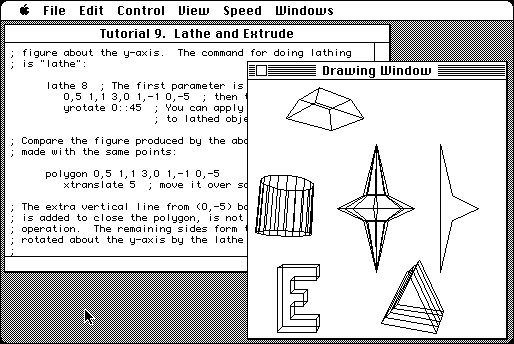

Download
xModels.zip (78K) xModels 2D and 3D 1.2 repackaged into a zipped hfs disk image and checksum file. The disk image can be mounted with Mini vMac.
xModels.hqx (106K) xModels 2D and 3D 1.2 in the original format.
copyright: David J. Eck
mod date: Jun 21, 1995
license: free for non-commercial use
official url :
Downloading TMCM Support Materials
“Designed to illustrate basic ideas of geometric transformation, hierarchical computer graphics modeling, and animation.” Written to accompany computer science textbook.

If you find these downloads useful, please consider helping the Gryphel Project, which hosts them.
Here are the md5 checksums for the downloads, signed with Gryphel Key 5:
--------- GRY SIGNED TEXT --------- 58a8af04548485aaa11b6278936ff3a8 xModels.zip 90345a83e3720016bd23574360b6022a xModels.hqx ------- BEGIN GRY SIGNATURE ------- Gry/4Xa8CFcUzxdN/CEe72XOPbLkF0aTZVmgoEOzjY3pu7/8gW/hCatSn9RkX+aB WJ6qLJaGBXDvvI8aeRpSHw+VDY8y94rtasIXwIIUKjJTq6i47KGB+D7E14YvYYhl LkWMBYqGck/qpn+stobB1Wo11Otvggt7WhvhgN3r7DVweeFn10zE5rtfN2J/MJj6 -------- END GRY SIGNATURE --------